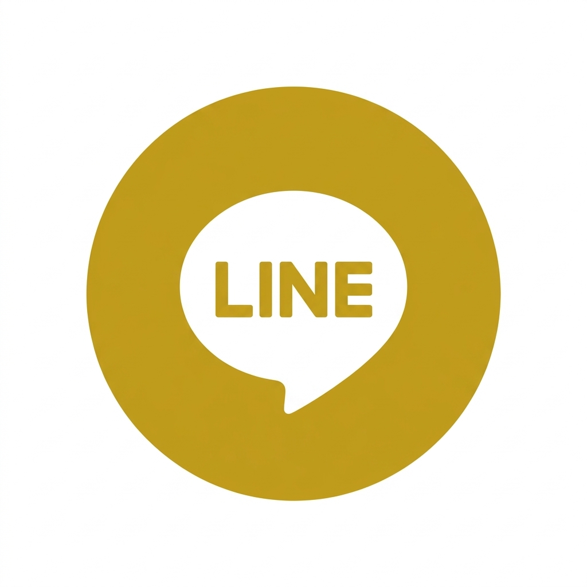

アフターケアはある?などすべてまとめました。
お客様のよくいただく質問をご紹介いたします。
ここにはないご不明点や聞きたいことなどがございましたら、店舗ごとにお問い合わせを受け付けておりますので、
下記よりお気軽にお問い合わせください

LINEで
メールフォームで
お電話で
Question1
そういう方のために、不定期でも通える回数券のプランをご用意しています。
土日祝も休まず営業しており、忙しい時にこそ心掛けるべき食事方法も提案させていただいてますので、
トレーニング頻度は高いに越したことはないものの、効果はご実感にただけるものとなっております。
もちろん、大丈夫です！
私たちには「運動が苦手な初心者の方こそお越しいただきたい」という思いがあります。
なぜなら、慣れていない自己流の筋トレは狙った部位に聞かず、最悪の場合ケガに繋がることがあるためです。「フィットネスライフの
スタートをMORIOKA-GYMで切りたい」とお客様に言っていただけることが私たちにとっては非常に大きなやりがいとなって
おります。